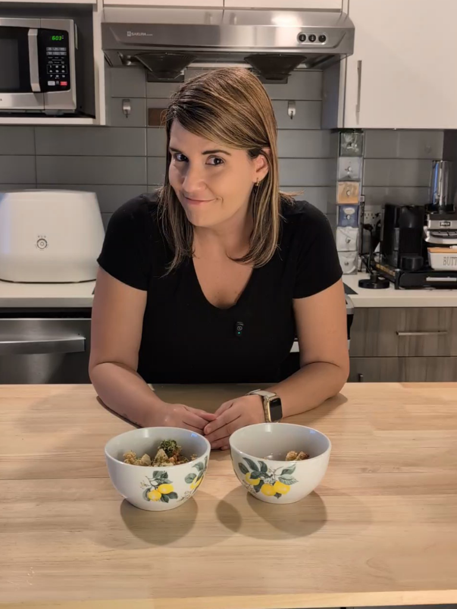

Não é frescura. Não é fase. Não é falha sua. É um padrão sensorial e comportamental que podem ser lidos, entendidos e conduzidos, com método.

Insistência, disfarce no alimento, recompensa, exposição repetida sem resultado. O problema não é a estratégia. É que ninguém ainda leu o que está por trás da recusa do seu filho.
A recusa alimentar não é aleatória. Ela segue um padrão. E é esse padrão que eu identifico.
Não adianta oferecer mais vezes quando ninguém entendeu ainda o que a criança está recusando de verdade.
Não é uma orientação genérica. É um processo para entender o padrão de recusa do seu filho antes de definir por onde começar.
Antes do atendimento, você responde um formulário detalhado sobre a alimentação do seu filho, os alimentos aceitos, as recusas, as reações na refeição e o que já foi tentado em casa.
Formulário inicialCom base nas respostas, eu analiso quais perfis de recusa aparecem com mais força e como eles se combinam no comportamento alimentar da criança.
Análise individualNo atendimento online, eu faço a devolutiva da análise, explico o que pode estar travando a alimentação e mostro os primeiros passos para conduzir o caso com mais clareza.
Devolutiva onlineIdentificar os perfis do seu filho é o que torna a condução possível e assertiva.
Os sentidos dela percebem mais do que os seus. Morder um tomate e sentir a parte gelatinosa, fria e escorregadia na boca é insuportável.
Os sentidos dela precisam de intensidade para processar o que está comendo. Frango cozido não. Frango empanado e crocante, sim.
Segurança para ela é saber exatamente o que vai vir no prato. O nugget precisa ser da mesma marca. O feijão não pode tocar o arroz.
A recusa dela não começa no alimento. Começa no ambiente. Na avó, sem pressão, ela experimenta. Em casa, recusa até o que costuma aceitar.
O corpo dela aprendeu que comer pode machucar. Teve um engasgo com carne e passou a não aceitar mais nenhum tipo de carne.
A comida não é relevante para ela. Qualquer coisa é mais interessante. Dá três garfadas no que adora e empurra o prato.
Você olha pro seu filho na hora da comida e não entende o que acontece com ele.
Dafni PaivaNutricionista · CRN3: 20.860
Especialista
em Seletividade Alimentar
Nutricionista · CRN3: 20.860 · Especialista em Seletividade Alimentar · @nutridafnipaiva
Cresci ouvindo que era frescura. Por falta de compreensão, acabei aceitando esse rótulo. Mas dentro de mim havia muito mais: culpa, frustração, ansiedade e o desejo de comer coisas que meu corpo simplesmente rejeitava.
Foi só na faculdade de Nutrição que uma professora observou meu comportamento e me falou sobre seletividade alimentar. Fiz especializações, me aprofundei no tema e desenvolvi um olhar próprio sobre os padrões de recusa.
Usei tudo o que aprendi para desenvolver um método que me ajudou a ampliar meu repertório alimentar. E o que antes era uma dor virou propósito: ajudar famílias a entenderem o filho com mais precisão, sem culpa e sem tentativa e erro.
A recusa do seu filho não é aleatória. Ela segue um padrão. E é esse padrão que muda tudo quando você finalmente consegue ler.
Uma análise individualizada da recusa alimentar do seu filho, com formulário prévio, devolutiva online de 1h a 1h30 e orientação inicial para entender por onde começar.
Você preenche antes do atendimento para que eu entenda o histórico, os comportamentos, os alimentos aceitos, as recusas e as reações do seu filho na hora de comer.
Eu avalio as respostas do formulário e identifico quais perfis estão mais presentes no caso do seu filho, considerando que uma mesma criança pode apresentar mais de um padrão ao mesmo tempo.
Na videochamada, eu faço a devolutiva da análise, explico o que pode estar por trás das recusas e mostro um caminho inicial de condução para a realidade da sua família.
Você recebe um registro com os principais pontos avaliados no formulário, os padrões identificados e os direcionamentos iniciais conversados no atendimento.